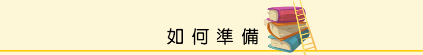

1.雅思考試內容
| 種 類 | 內 容 | 考試技巧 |
|---|---|---|
| 聽力Listening (40題/播音30分鐘，作答10分鐘) |
共四個部份。
|
聽力過程要邊聽邊作答，可在題目卷上作筆記。時若需修改可直接劃掉，無需使用橡皮擦修改以免分心。 |
| 閱讀Reading (40題/1小時-包含填寫答案) |
三篇文章。
|
建議每篇時間約20分鐘。看文章前須先瀏覽題目。藉此判斷須從文章開始看或是由題目找答案。 |
| 口說Speaking (約11-14分鐘) |
考生與口試官一對一方式進行，分三個部份。
|
可上PPT尋找同好，多說多練習。 |
| 寫作Writing (2題/1小時) |
二篇作文。
|
圖表題須先觀察圖表，再以學術式英文寫下特徵，需有大量的詞彙能力。須累積大量的想法與說論的能力。 |
2.工具書
| 書 名 | 內 容 |
|---|---|
| Cambridge IELTS 1-11 | 必備考古題書，可幫助了解熟悉IELTS考試方式。 |
| IELTS考試技能訓練教程.听力 | 網友好評聽力書，北語黑眼睛，整本都是練習題，可增加聽力實力。 |
| 新平行閱讀法 | 網友好評閱讀書籍。了解各類題型，增加閱讀速度 |
| IELTS雅思考試官方指南 | 針對各種考題，提供全面解析。 |
| English Grammar in Use | 網友好評文法書，採用一面講解一面練習題的方式，可以練習英文語感加強文法基礎，內容豐富。 |
*資料統計至2016年8月
3.線上學習教材
| 教 材 | 內 容 | |
|---|---|---|
| 寫作 | IELTS ESSAYS | 寫作教學平台，提供多方元主題範例。 |
| 聽力 | BBC RADIO 4 | 24小時英語廣播，可習慣講話速度與腔調。 |
| TED Talk | 聽力學習平台，著重在科學、教育類主題，有各國語言字幕，也可將字幕關掉練習聽力。 | |
| 口說 | Skype | 可至PTT IELTS雅思板尋找網友一同練習。 |
| 綜合模考 | Cambridge ESOL | 劍橋大學英語考試院提供考試資訊、練習資源和考試手冊。 |
| Road to IELTS雅思之路 | 線上學習系統，提供免費10小時模擬試題。報名後可獲得額外20小時的練習。 | |
| 其他 | 劍橋免費英語辭典 | 英語辭典。 |
4.App
| App | 內 容 |
|---|---|
| Road to IELTS雅思之路 | 線上學習系統，提供免費10小時模擬試題。報名後可獲得額外20小時的練習。 |
| Word power | 詞彙學習與試題測驗。 |
| 1001 ways | 各國口音互動式遊戲練習。 |
| Turn In Radio | 可收聽BBC News。 |
5.討論區
| 討論區 | 內 容 |
|---|---|
| Hello UK! | 留學經驗分享平台。 |
| PTT-IELTS雅思板 | 心得分享，可得到很大的心靈慰藉(拍…) |
| PTT-AdvEduUK 英國留學遊學版 | |
| PTT-Studyabroad板 | |
| Facebook-Education USA | |
| Dcard留學版 |
*資料統計至2016年8月